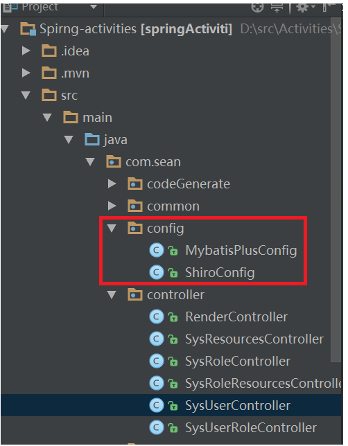

一.使用的spring boot +mybatis-plus+shiro+maven来搭建项目框架
1 <!--shiro-->
2 <dependency>
3 <groupId>org.apache.shiro</groupId>
4 <artifactId>shiro-core</artifactId>
5 <version>1.4.0</version>
6 </dependency>
7 <dependency>
8 <groupId>org.apache.shiro</groupId>
9 <artifactId>shiro-spring</artifactId>
10 <version>1.4.0</version>
11 </dependency>2.写一个登录页面（登录页面代码就自己随便写一个form表单提交到controller就行）
3.在controller中创建userLogin方法，创建UsernamePasswordToken，获取subject,通过subject.login来进行登录认证。
1 @Slf4j
2 @RestController
3 @RequestMapping("/sys-user")
4 public class SysUserController {
5
6 /**
7 * 用户登录
8 * @param userName
9 * @param password
10 */
11 @PostMapping(value = "/login")
12 public ServerResponse userLogin(@RequestParam String userName, @RequestParam String password)
13 {
14 //1.获取token
15 UsernamePasswordToken token = new UsernamePasswordToken(userName,password);
16 //2.获取subject
17 Subject subject = SecurityUtils.getSubject();
18 //3.进行登录
19 try {
20 subject.login(token);
21 log.info("subject:"+subject.getPrincipal().toString());
22 return ServerResponse.createBySuccessMessage("登录成功!");
23 }catch (Exception e)
24 {
25 log.error("登录失败，用户名[{}]", userName, e);
26 token.clear();
27 return ServerResponse.createByErrorMessage(e.getMessage());
28 }
29 }以上就是一个基本的登录流程，下面就继续分析subject.login()方法，到底怎么实现登录认证的，在后续中逐步分析如何使用自定义的Realm和CredentialsMatcher密码比较器.
首先，我们从外部来看 Shiro 吧，即从应用程序角度的来观察如何使用 Shiro 完成工作。如下图：(引用自《跟我学shiro教程》)
4.通过代码跟踪可以发现，subject.login()方法又调用了securityManager.login()方法，因此我们还需要一个注册一个securityManager的bean交给spring去管理
5.创建一个config的package,便于管理，项目结构如下

6.创建一个ShiroConfig的类，用来配置shiro相关的bean,首先使用@Configuration注解表明这是一个配置类，并注册一个securityManager的bean,发现传入参数是一个MyRealm的类，这个类就是我们需要自己去定义的Realm类
1 //配置核心安全事务管理器
2 /**
3 * securityManager
4 * @param authRealm ，@Qualifier表明了哪个实现类才是我们所需要的
5 * @return
6 */
7 @Bean(name="securityManager")
8 public SecurityManager securityManager(@Qualifier("myRealm") MyRealm authRealm) {
9
10 DefaultSecurityManager securityManager = new DefaultWebSecurityManager();
11
12 //设置Realm
13 securityManager.setRealm(authRealm);
14 securityManager.setRememberMeManager(rememberMeManager());
15 return securityManager;
16 }
17 //配置自定义的权限登录器
18 @Bean
19 public MyRealm myRealm()
20 {
21 MyRealm myRealm = new MyRealm();
22 myRealm.setCredentialsMatcher(new CredentialsMatcher());
23 return myRealm;
24 }7.创建类Realm类并继承AuthorizingRealm类，然后通过token中的Principal(即用户名)去查询数据库中User,然后再把查询到的用户信息（包括密码）返回AuthorizationInfo
自定义MyRealm类继承thorizingRealm类，并且重写doGetAuthenticationInfo方法
1 public class MyRealm extends AuthorizingRealm{
2
3 @Autowired
4 private SysUserServiceImpl sysUserService;
5 //授权
6 @Override
7 protected AuthorizationInfo doGetAuthorizationInfo(PrincipalCollection principals) {
8 return null;
9 }
10
11 //认证
12 @Override
13 protected AuthenticationInfo doGetAuthenticationInfo(AuthenticationToken token) throws AuthenticationException {
14 /**获取用户输入的用户信息*/
15 String userName = (String)token.getPrincipal();
16 QueryWrapper<SysUser> queryWrapper = new QueryWrapper<SysUser>();
17
18
19 queryWrapper.eq("username",userName);
20
21 SysUser user = sysUserService.getOne(queryWrapper);
22
23 if(user == null)
24 {
25 throw new UnknownAccountException("该用户不存在");
26 }
27 if(user.getStatus() != null && Const.UserStatusEnum.DISABLE.getCode().equals(user.getStatus()))
28 {
29 throw new LockedAccountException("该账号被锁定，请联系管理员！");
30 }
31 //把user信息放在session中
32 SecurityUtils.getSubject().getSession().setAttribute(Const.CURRENT_USER,user);
33 return new SimpleAuthenticationInfo(user,user.getPassword(), ByteSource.Util.bytes(userName),getName());
34 }
35 }如果身份认证失败就会捕获AuthenticationException，常见的如下：
DisabledAccountException（禁用的帐号）
LockedAccountException（锁定的帐号）
UnknownAccountException（错误的帐号）
ExcessiveAttemptsException（登录失败次数过多）
IncorrectCredentialsException （错误的凭证）
ExpiredCredentialsException（过期的凭证）等
如果身份认证通过后就要进行密码认证
自定义一个CredentialsMatcher类继承SimpleCredentialsMatcher类,并且重写doCredentiaIsMatch方法
以上就是shiro的基本登录认证流程，如有不当之处还望大家多多指教。